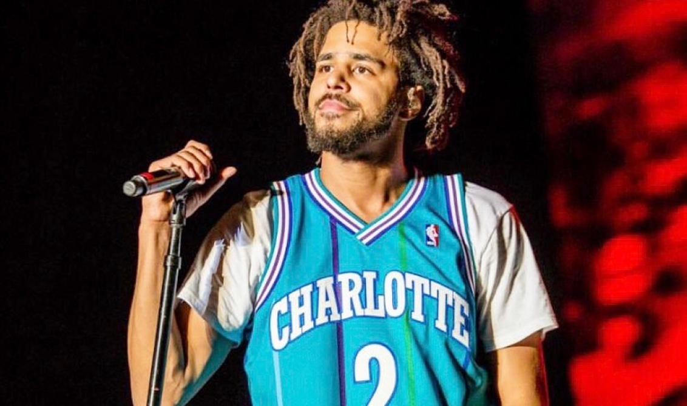

J.Cole Intekrview with Zacktv goes wrong
ZackTv had an interview with J.Cole. Everything was going smoothly, until Zack started to question him about his life growing up.J.Cole was not liking it and asked him to stop numerous times,but Zack didn't.Zack then began asking about his father and mother,and how did he deal with them doing drugs when he was a little kid. J.Cole reportedly got up, started saying some very explicit words, and walked out on live tv.